평가 구성
A버전 = 정식 | B버전 = 학생 대화형 | C버전 = 소설형
B버전 등장인물 - AI 수업 친구들
하은, 온유, 은하, 윤지, 하임, 현지, 현공이는 같은 반 친구들입니다. 모두 AI 기초 수업을 듣고 있고, 수업에서 배운 내용을 자주 이야기합니다.
C버전 배경 - "어느 수학자의 꿈" AI 220년사
1950년, 비 내리는 영국 맨체스터. 한 수학자가 논문을 씁니다. 제목 -- Computing Machinery and Intelligence. 그는 묻습니다. "기계가 생각할 수 있는가?" 이 질문 하나가 220년에 걸친 여정의 시작이었습니다.
Part A: 기본 개념

위 사진의 인물은 1950년 "기계가 생각할 수 있는가?"라는 질문을 던진 영국의 수학자이다. 이 사람의 이름은 ( )이다.
하은: "오늘 수업에서 본 그 영국 수학자, 1950년에 엄청난 질문을 했잖아."
온유: "'기계가 생각할 수 있는가?' 그 질문? 그 사람 이름이..."
하은: "사진을 보여줬었는데, 이름이 뭐였더라?"
위 사진 속 인물의 이름은 ( )이다.
이 수학자의 이름은 ( )이다.

위 사진의 인물은 매컬럭과 핏츠(McCulloch & Pitts)의 인공 뉴런 아이디어에 학습 규칙을 더하여 새로운 기계를 만들었다. 이 기계의 이름은 ( )이다.
윤지: "이 사람이 매컬럭이랑 핏츠의 인공 뉴런에 학습 규칙을 더한 거잖아."
은하: "맞아! 근데 이 기계 이름이 뭐였지?"
위 인물이 만든 학습 기계의 이름은 ( )이다.
이 기계의 이름은 ( )이다.

위 그래프 (다)처럼 출력이 0에서 1 사이의 S자 곡선인 활성화함수의 이름은 ( )이다.
현지: "자, 이 그래프들 봐. S자 곡선으로 0에서 1 사이 값을 내는 건?"
하임: "그건... 음..."
그래프 (다)의 활성화함수는 ( )이다.
그래프 (다)처럼 0~1 사이 S자 곡선을 그리는 함수는 ( )이다.
위 그래프 (가)처럼 입력이 0 이하이면 0, 양수이면 그대로 출력하는 활성화함수의 이름은 ( )이다.
* A-3과 동일한 이미지 참고
현지: "그럼 0 이하면 싹 다 0이고, 양수면 그대로 통과하는 건?"
그래프 (가)의 활성화함수는 ( )이다.
그래프 (가)처럼 양수를 그대로 통과시키는 함수는 ( )이다.
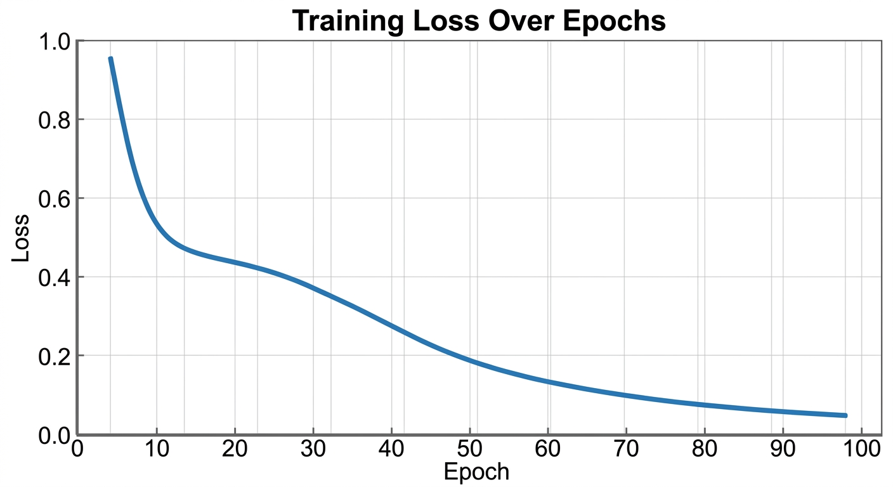
위 그래프처럼, AI가 학습하면서 점점 줄어드는 값이 있다. 예측값과 실제값의 차이를 하나의 숫자로 측정하는 이 함수를 ( )이라 한다.
온유: "AI가 학습하면서 이 값이 점점 줄어들잖아."
하은: "맞아. 이걸 재는 함수 이름이..."
예측값과 실제값의 차이를 측정하는 함수를 ( )이라 한다.
이 함수를 ( )이라 한다.
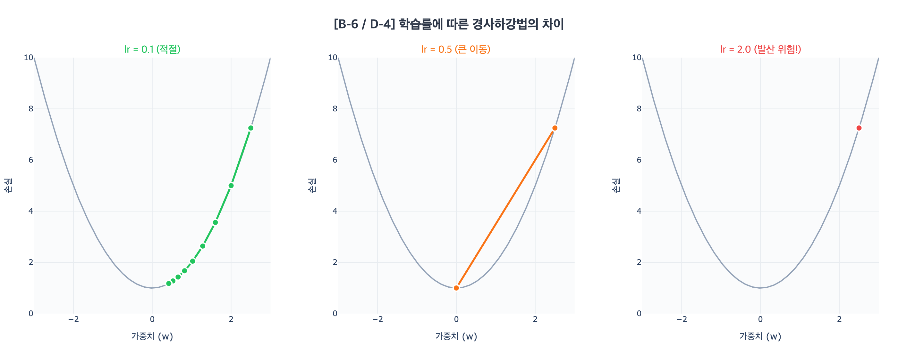
위 그래프에서, 한 번에 이동하는 폭이 너무 크면 발산하고 너무 작으면 느리다. 이 이동 폭을 결정하는 값을 ( )이라 한다.
온유: "그리고 줄이려고 이동하는데, 한 번에 얼마나 움직일지를 정하는 값도 있잖아."
이동 폭을 결정하는 값을 ( )이라 한다.
이동 폭을 결정하는 값을 ( )이라 한다.
퍼셉트론의 학습 규칙은 "예측이 틀리면 가중치를 ( )하고, 맞으면 ( )한다"이다.
* B버전에서는 A-2 문항에 포함되어 있습니다.
예측이 틀리면 값을 ( )하고, 맞으면 ( )한다.
경사하강법의 가중치 업데이트 공식: wnew = wold - ( ) x ( )
하은: "공식이 뭐였더라... wnew는..."
가중치 업데이트 공식: wnew = wold - ( ) x ( )
공식은 wnew = wold - ( ) x ( )이다.
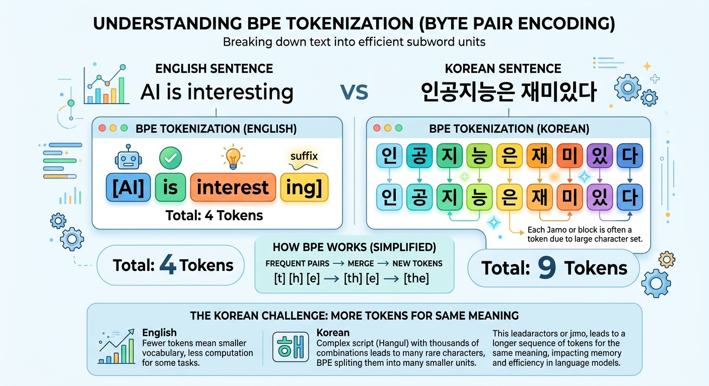
"unhappiness"를 "un", "happi", "ness"처럼 의미 단위로 분절하는 위 그림의 토큰화 방식을 ( )이라 한다.
은하: "맞다! 그리고 애초에 AI가 글을 쓰려면 단어를 쪼개야 한다고 했잖아."
단어를 의미 단위로 분절하는 토큰화 방식을 ( )이라 한다.
의미 단위로 분절하는 방식을 ( )이라 한다.

위 그림처럼, AI가 사실이 아닌 내용을 자신 있게 생성하는 현상을 ( )이라 한다.
은하: "야, ChatGPT한테 물어봤더니 없는 논문을 인용하는 거야!"
윤지: "그게 수업에서 배운 그 현상이잖아. 이름이..."
AI가 사실이 아닌 내용을 생성하는 현상을 ( )이라 한다.
이 현상의 이름은 ( )이다.
Part B: 수학적 이해 (계산형)

위 퍼셉트론에서 AND 게이트의 가중치가 w1=1, w2=1, 편향 b=-1.5이다. 입력이 (1, 0)일 때, 가중합과 출력을 구하시오. (활성화: 0 초과이면 1, 이하이면 0)
가중합 = 1x1 + 0x1 + (-1.5) = -0.5 → 0 이하이므로 출력 = 0
하임: "이 그림 봐. 이게 AND 게이트야."
현지: "가중치가 w1=1, w2=1이고 편향이 -1.5래. 입력을 (1, 0)으로 넣으면?"
가중합과 출력을 구하시오.
가중합 = 1x1 + 0x1 + (-1.5) = -0.5 → 출력 = 0
이 기계는 무엇을 출력할까요?
가중합 = -0.5 → 출력 = 0
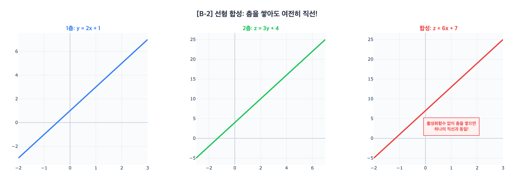
첫 번째 층이 y = 2x + 1이고, 두 번째 층이 z = 3y + 4일 때, z를 x에 대한 식으로 나타내시오. 이 결과가 의미하는 바를 한 문장으로 쓰시오.
z = 3(2x + 1) + 4 = 6x + 3 + 4 = 6x + 7 (여전히 1차식)
의미: 활성화함수 없이 선형 층을 쌓으면, 아무리 많이 쌓아도 하나의 선형 함수와 동일하다.
하은: "선생님이 '활성화함수 없이 층을 쌓으면 의미가 없다'고 했는데, 이 그림이 그 뜻이야?"
온유: "직접 계산해보면 바로 알 수 있어."
y = 2x + 1, z = 3y + 4일 때 z를 x로 나타내고, 의미를 한 문장으로 쓰시오.
z = 6x + 7 — 선형 합성은 선형이다.
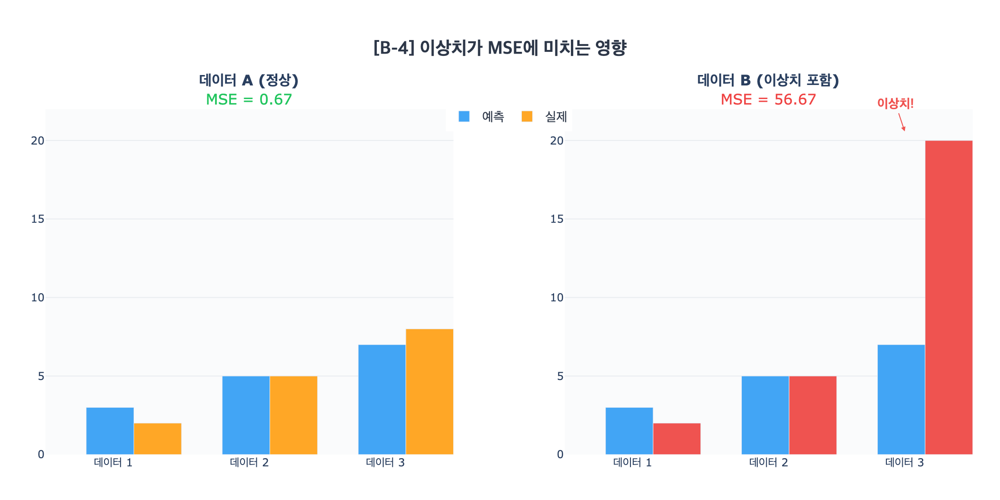
현공이는 날씨 예측 AI를 만들고 있다. 3일간의 예측 기온이 [4℃, 2℃, 6℃]이고, 실제 기온은 [3℃, 2℃, 9℃]였다. 이 AI의 MSE(평균제곱오차)를 구하시오.
오차: (4-3)=1, (2-2)=0, (6-9)=-3
오차 제곱: 1, 0, 9
합: 1+0+9 = 10
MSE = 10/3 ≈ 3.33
현공: "우리 AI가 3일간 기온을 예측했어. 얼마나 틀렸는지 MSE로 계산해보자."
은하: "오차를 제곱하고 평균 내면 되는 거지?"
예측 [4℃, 2℃, 6℃], 실제 [3℃, 2℃, 9℃]일 때 MSE를 구하시오.
MSE = (1+0+9)/3 ≈ 3.33
데이터 A: 예측 [3, 5, 7], 실제 [2, 5, 8]
데이터 B: 예측 [3, 5, 7], 실제 [2, 5, 20] (이상치)
A와 B 각각의 MSE를 구하고, 이상치가 MSE에 미치는 영향을 설명하시오.
A: [(1)²+(0)²+(-1)²]/3 = 2/3 ≈ 0.67
B: [(1)²+(0)²+(-13)²]/3 = 170/3 ≈ 56.67
이상치 하나로 MSE가 약 85배 커졌다. MSE는 오차를 제곱하므로 큰 오차에 민감하다.
현공: "위 그래프를 봐. 데이터 하나가 엄청 벗어나 있어. 제곱이니까 MSE에 영향이 클 것 같은데..."
은하: "얼마나 차이 나는지 직접 계산해보자!"
데이터 A, B 각각의 MSE를 구하고 이상치의 영향을 설명하시오.
A ≈ 0.67, B ≈ 56.67 — 약 85배 차이
은하는 경사하강법 레이싱 게임을 하고 있다. 현재 가중치 w = 3.0인 위치에 공이 있고, 그 지점의 기울기 = 4, 학습률 = 0.05일 때, 한 번 업데이트하면 공은 어디로 이동하는가?
wnew = 3.0 - 0.05 x 4 = 3.0 - 0.2 = 2.8
은하: "지금 내 공이 w=3.0에 있어. 기울기가 4이고 학습률이 0.05면, 한 번 이동하면 어디로 가지?"
현공: "공식에 대입해봐!"
업데이트된 가중치를 구하시오.
wnew = 3.0 - 0.2 = 2.8
현재 w = 5.0, 기울기 = -3일 때, 학습률 0.1 / 0.5 / 2.0 각각의 새 가중치를 구하고, 어느 학습률이 가장 적절한지 이유와 함께 쓰시오.
lr=0.1: 5.0 - 0.1x(-3) = 5.0 + 0.3 = 5.3 (안정적 이동)
lr=0.5: 5.0 - 0.5x(-3) = 5.0 + 1.5 = 6.5 (큰 이동)
lr=2.0: 5.0 - 2.0x(-3) = 5.0 + 6.0 = 11.0 (과도한 이동, 발산 위험)
적절한 학습률: 0.1 또는 0.5. 2.0은 최솟값을 뛰어넘어 발산할 수 있다.
현지: "학습률을 크게 하면 빨리 도착하는 거 아니야?"
현공: "위 그래프를 봐. 세 가지 학습률로 비교해볼까?"
w=5.0, 기울기=-3일 때, lr 0.1/0.5/2.0 각각의 결과와 적절한 학습률을 쓰시오.
5.3 / 6.5 / 11.0 — 0.1 또는 0.5 적절
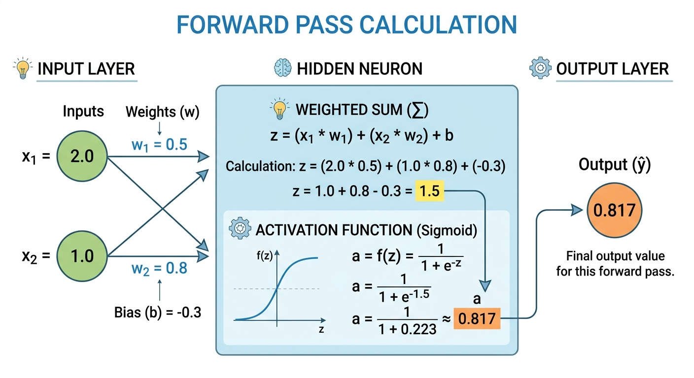
입력 x1=2, x2=1, 가중치 w1=0.5, w2=-1, 편향 b=0.5, 활성화함수 ReLU일 때 출력을 구하시오.
가중합: z = (2x0.5) + (1x(-1)) + 0.5 = 1 - 1 + 0.5 = 0.5
ReLU(0.5) = 0.5 (양수이므로 그대로)
윤지: "입력이 2랑 1이고, 가중치가 0.5랑 -1... 이걸 계산하면?"
하은: "편향 0.5도 더해야 해! 그리고 ReLU 통과시켜야지."
가중합과 ReLU 출력을 구하시오.
z = 0.5, ReLU = 0.5
다음 신경망의 학습 가능한 파라미터(가중치 + 편향)의 총 개수를 구하시오.
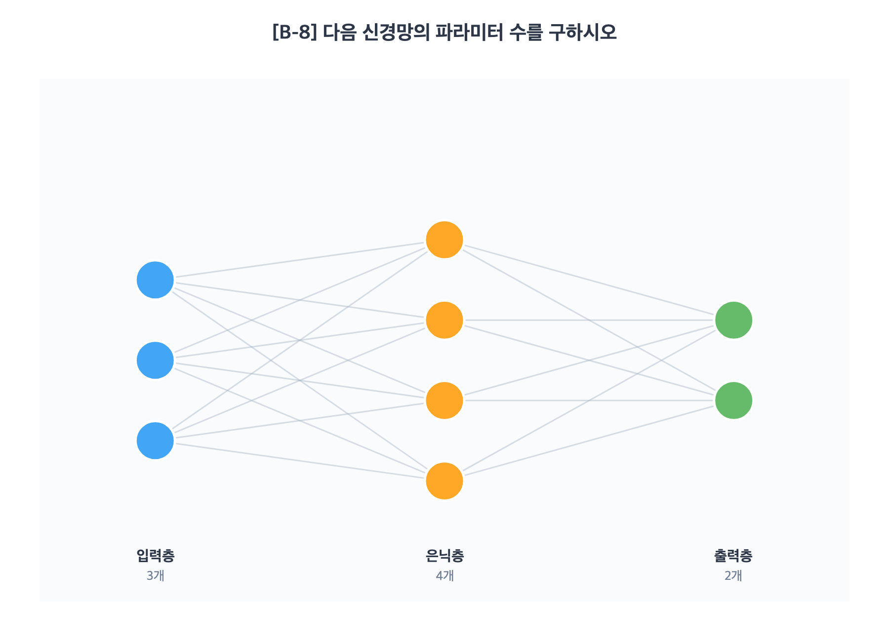
4->2">입력→은닉: 가중치 3x4=12개, 편향 4개 → 소계 16개
은닉→출력: 가중치 4x2=8개, 편향 2개 → 소계 10개
총 26개
은하: "어? 이것도 뉴럴 네트워크네?"
현공: "맞아. 그러면 여기엔 학습할 가중치와 편향이 모두 몇 개지?"
은하: "어.. 잠깐.. 층마다 세야 하는 거지?"
위 신경망에서 학습할 파라미터는 총 몇 개인가?
총 26개
위 신경망에서 학습해야 할 파라미터는 정확히 몇 개인가?
총 26개
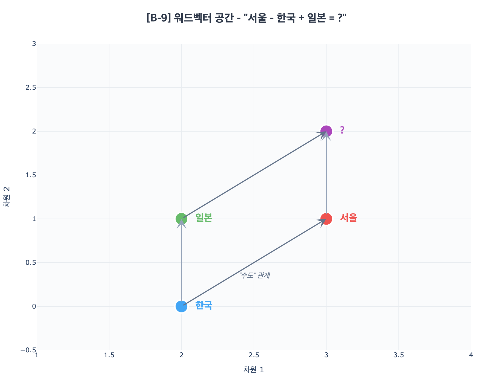
서울=[3, 1], 한국=[2, 0], 일본=[2, 1]일 때, "서울 - 한국 + 일본"을 계산하고, 이 결과가 의미하는 바를 한 문장으로 쓰시오.
[3-2+2, 1-0+1] = [3, 2]
의미: "서울이 한국의 수도이듯, 결과 벡터는 일본의 수도(도쿄)에 해당하는 위치를 가리킨다."
하임: "대박! 왕 - 남자 + 여자 = 여왕이래. 그러면 서울 - 한국 + 일본은?"
현공: "위 그래프를 보고 벡터 연산을 해보자."
서울=[3,1], 한국=[2,0], 일본=[2,1]일 때 계산 결과와 의미를 쓰시오.
[3, 2] — 일본의 수도(도쿄)에 해당
Part C: 시각 / 분석형
위 4개의 그래프를 알맞은 활성화함수 이름과 연결하시오.
Sigmoid / ReLU / Tanh / Leaky ReLU
(가) = (나) = (다) = (라) =
온유: "이 그래프들이 다 다른데, 어떤 게 어떤 함수인지 헷갈려..."
윤지: "하나씩 특징을 보면 돼. S자는? 꺾인 선은? 음수 쪽도 작은 값이 나오는 건?"
각 그래프를 알맞은 함수 이름과 연결하시오.
어떤 곡선이 어떤 함수인가?

다음을 역전파 과정의 올바른 순서로 배열하시오.
[ 가중치 업데이트 / 순전파 수행 / 기울기 역방향 전파 / 오차 계산 ]
( ) → ( ) → ( ) → ( )
하임: "이 4장을 순서대로 놓아봐."
현지: "순전파가 먼저인 건 알겠는데, 그 다음이..."
4단계를 올바른 순서로 배열하시오.
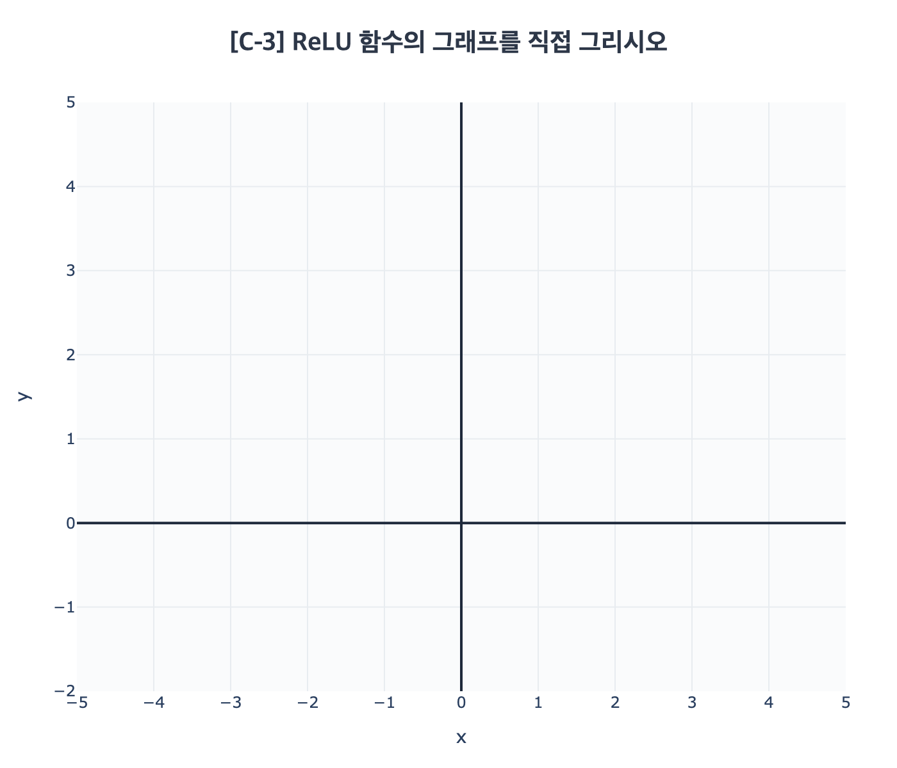
(1) 위 좌표평면에 ReLU 함수의 그래프를 직접 그리시오. (2점)
(2) 10층 이상의 깊은 신경망에서, Sigmoid 대신 ReLU를 사용하는 이유를 '기울기 소실' 관점에서 설명하시오. (2점)
하은: "ReLU 그래프를 직접 그려볼래?"
윤지: "좋아. 그런데 왜 딥러닝에서는 Sigmoid 대신 ReLU를 쓰는 거야? 선생님이 '기울기 소실'이라고 했는데..."
(1) ReLU 그래프를 그리시오. (2) '기울기 소실' 관점에서 이유를 설명하시오.
위 그래프를 참고하여, 다층 신경망에서 활성화함수 없이 층을 쌓으면 왜 의미가 없는지 설명하고, 활성화함수가 부여하는 핵심 성질의 이름을 쓰시오.
윤지: "이 그래프 봐. 두 개의 선형 함수를 합성해도 결국 직선이야."
온유: "그러면 층을 100개 쌓아도 의미가 없다는 거잖아. 이걸 해결하는 게..."
활성화함수 없이 층을 쌓으면 왜 의미가 없는지 설명하고, 활성화함수가 부여하는 핵심 성질을 쓰시오.
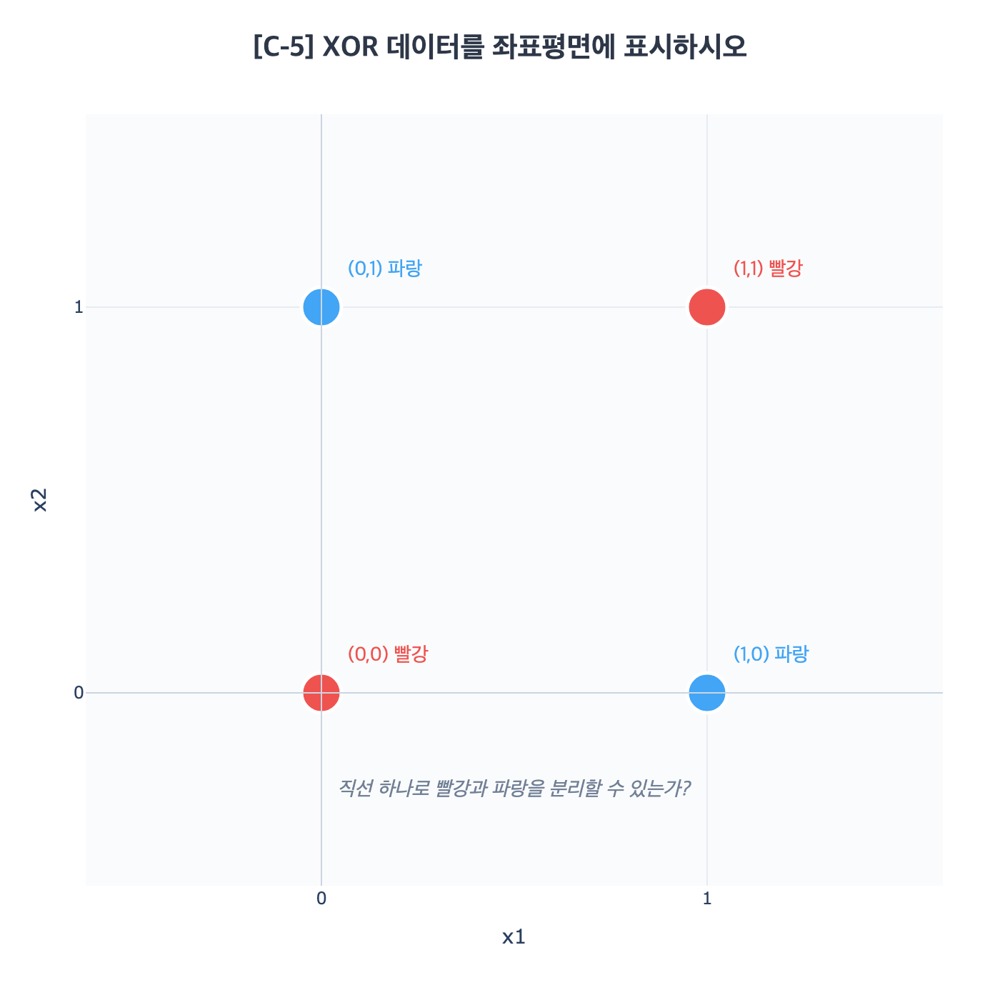
(1) 위 좌표평면의 XOR 데이터를 확인하시오: (0,0)=빨강, (0,1)=파랑, (1,0)=파랑, (1,1)=빨강. (1점)
(2) 직선 하나로 빨강과 파랑을 완전히 분리할 수 있는지 판단하고, 그 이유를 쓰시오. (3점)
현지: "위 그래프를 봐. 아무리 직선을 움직여도 빨강이랑 파랑을 나눌 수 없었잖아."
하임: "왜 안 되는지 설명해볼까?"
직선 하나로 분리가 가능한지 판단하고 이유를 쓰시오.
Part D: 서술형 - 개별 주제
3축 평가: (1) 핵심 키워드 포함 (2) 논리적 설명 (3) 적용/확장

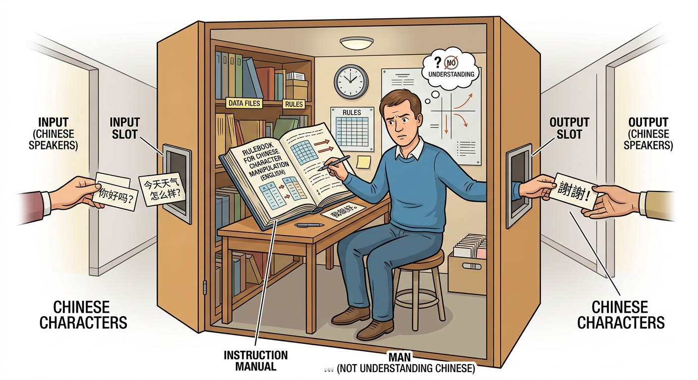
튜링 테스트의 판정 기준과 중국어 방 반박을 각각 설명하고, 현재의 ChatGPT에 대해 자신의 의견을 근거와 함께 쓰시오.
하은: "나는 ChatGPT가 생각할 수 있다고 봐. 대화가 너무 자연스러웠잖아."
하임: "근데 중국어 방 실험을 생각하면... 이해하는 게 아니라 흉내 아닌가?"
하은: "흠... 너는 어떻게 생각해? 근거를 들어서 말해봐."
튜링 테스트의 판정 기준과 중국어 방 반박을 각각 설명하고, ChatGPT에 대한 의견을 근거와 함께 쓰시오.
튜링 테스트의 기준과 중국어 방의 반박을 각각 설명하고, ChatGPT에 대한 당신의 판단을 근거와 함께 쓰시오.
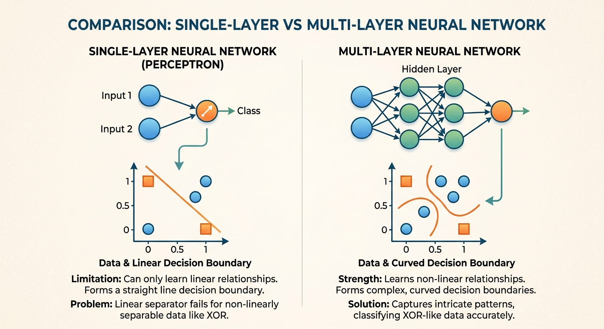
단층 퍼셉트론이 XOR 문제를 풀 수 없는 이유를 설명하고, 활성화함수가 이 한계를 어떻게 극복하는지 서술하시오.
은하: "아직도 기억나. 직선을 아무리 움직여도 XOR이 안 됐잖아."
온유: "맞아. 근데 3차시에서 활성화함수 켜니까 됐잖아. 왜 그런 건지 설명할 수 있어?"
은하: "음... 직선 하나로 안 되니까... 공간을 구부린다고 했나?"
XOR 한계의 이유와 활성화함수의 극복 방법을 서술하시오.
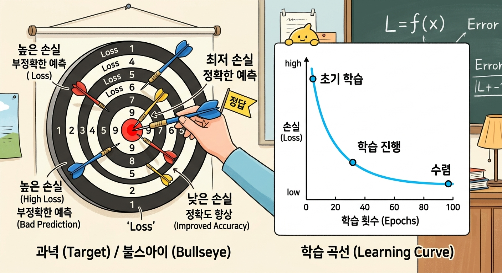
손실함수의 정의와 신경망 학습에서의 역할을 설명하시오.
윤지: "현지야, 나 동생이 '손실함수가 뭐야?'라고 물어보는데 어떻게 설명하면 좋을까?"
현지: "음... '얼마나 틀렸는지를 재는 자'라고 하면 되지 않을까?"
윤지: "근데 왜 필요한지도 설명해야 해."
손실함수의 정의와 신경망 학습에서의 역할을 설명하시오.
손실함수란 무엇이고, 신경망 학습에서 왜 필요한지 설명하시오.
경사하강법의 원리를 설명하고, 학습률이 너무 클 때와 너무 작을 때 각각 어떤 문제가 생기는지 서술하시오.
현지: "학습률 2.0으로 했더니 공이 왔다 갔다 하면서 안 내려갔어."
은하: "나는 0.001로 했더니 너무 느려서 시간 안에 못 내려갔어."
현지: "왜 그런 건지 설명해볼까?"
경사하강법의 원리와 학습률에 따른 문제를 서술하시오.
순전파와 역전파의 관계를 4단계로 설명하시오.
하임: "역전파가 제일 어려웠어. 순전파랑 뭐가 다른 건지..."
하은: "순전파는 앞으로, 역전파는 뒤로 가는 거잖아. 4단계로 정리해볼까?"
순전파와 역전파의 관계를 4단계로 설명하시오.
순전파와 역전파가 어떻게 함께 작동하여 신경망을 학습시키는지, 4단계로 설명하시오.
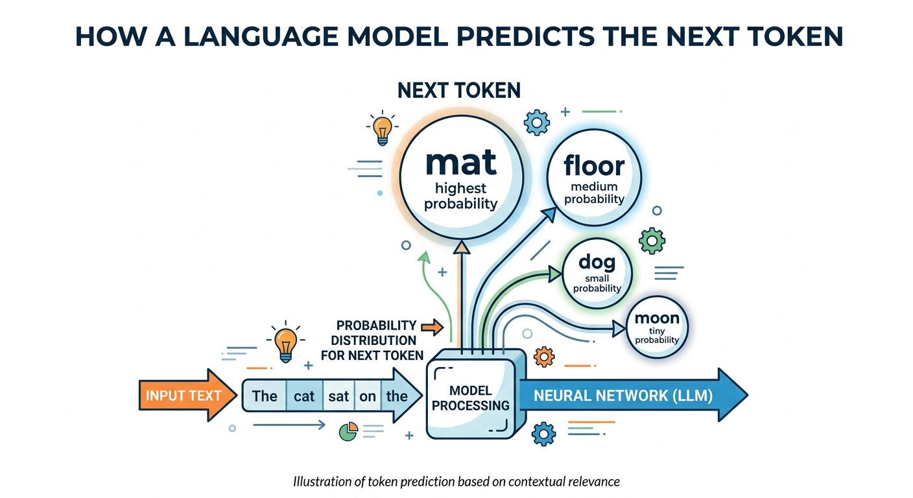

LLM의 '다음 토큰 예측' 원리를 설명하고, Temperature가 출력에 미치는 영향을 서술하시오.
온유: "Temperature를 0.1로 하니까 맨날 같은 답만 나와. 2.0으로 하니까 이상한 말도 해."
윤지: "왜 그런 건지 설명할 수 있어? '다음 토큰 예측' 원리부터 시작해서."
다음 토큰 예측 원리와 Temperature의 영향을 서술하시오.
Part E: 서술형 - 통합
신경망이 하나의 데이터에서 학습하는 전체 과정을 "손실함수 -> 경사하강법 -> 역전파"의 흐름으로 연결하여 설명하시오.
윤지: "4차시, 5차시, 6차시에서 배운 게 결국 하나로 이어지잖아."
하은: "맞아. 손실함수로 재고 -> 경사하강법으로 줄이고 -> 역전파로 전달하는 거지?"
윤지: "그 전체 흐름을 처음부터 끝까지 써보자."
전체 학습 과정을 연결하여 설명하시오.
이 전체 과정을 하나의 흐름으로 연결하여 설명하시오.
LLM이 환각(거짓 정보)을 생성하는 원인을 토큰화, 확률적 다음 토큰 예측의 관점에서 설명하시오. "AI가 멍청해서"가 아닌, 구조적으로 왜 필연적인지 서술하시오.
은하: "ChatGPT한테 연구 논문 추천해달라고 했더니, 진짜 없는 논문을 지어냈어!"
하임: "그게 환각이잖아. 근데 이거 AI가 바보라서 그런 게 아니라고 했잖아."
은하: "맞아... 토큰화부터 시작해서 왜 이럴 수밖에 없는지 설명해볼래?"
환각의 구조적 원인을 토큰화와 확률적 예측의 관점에서 서술하시오.
토큰화와 확률적 다음 토큰 예측의 관점에서, 환각이 왜 불가피한지 설명하시오.
Part F: 자기 성찰
"기계가 생각할 수 있는가?"
- 이 질문에 대한 나의 현재 답: (자유 서술)
- 그렇게 생각하는 근거: (자유 서술)
- AI에 대해 내가 이미 알고 있는 것: (자유 서술)
- 이 수업에서 가장 알고 싶은 것: (자유 서술)
- 같은 질문 "기계가 생각할 수 있는가?"에 대한 지금의 답: (자유 서술)
- 1차시 때의 나의 답을 다시 읽어보세요. 무엇이 변했나요? (자유 서술)
- 어떤 수업 경험이 나의 생각을 바꾸었나요? 가장 결정적이었던 순간을 구체적으로: (자유 서술)
- 수업에서 배운 개념 중 3개 이상을 사용하여 답의 근거를 쓰시오: (자유 서술)
- AI와 인간이 함께하는 미래에 대한 나의 생각: (자유 서술)